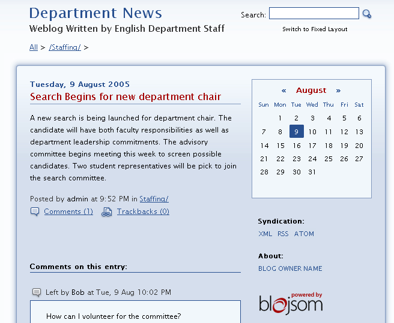

Blogging Portlet
Looking for more help options? Click Here
The Blog Portlet allows select individuals to author blogs that can be read and commented upon by the entire campus population.
Viewing Blogs
As a blog reader there are a number of options for viewing information. By default users will be presented with a list of blog entries organized by date within the top-level category of the blog.
To view additional blog entries:
- Click a category name under the Subcategories heading to view blog entries for another subject area.
- To return to the parent category view, click the parent category name listed above the blog entries.
- To view comments for a blog entry, click the Comments link.
- To view Trackbacks for a blog entry, click the Trackback link.
To Search for blog entries:
- Enter word to be search for.
- Click the Search icon.
- Blog entries for all categories matching your search criteria will be displayed. Entries will be sorted by date
To review blog entries for a specific date:
- Navigate to the desired month, using the forward and back icons within the Blog calendar
- Dates for which blog entries exist will be highlighted in the calendar.
- Click a highlighted calendar day to view all blog entries submitted on that date. Entries from all categories and sub-categories will be included in the display.

Adding Blog Comments
If comments have been enabled for a blog, then any blog reader can add a comment to a specific blog post.
To add a comment:
- Click Comments link next to the blog entry you wish to comment on.
- Existing comments will be displayed along with fields to enter new comments.
- Enter your name and comment. E-mail address and URL may also be entered, but this information is optional.
- Click the Comment button.
If comments have been enabled for a blog, then any blog reader can add a comment to a specific blog post.
To add a comment:
- Click Comments link next to the blog entry you wish to comment on.
- Existing comments will be displayed along with fields to enter new comments.
- Enter your name and comment. E-mail address and URL may also be entered, but this information is optional.
- Click the Comment button.
If comments have been enabled for a blog, then any blog reader can add a comment to a specific blog post.
To add a comment:
- Click Comments link next to the blog entry you wish to comment on.
- Existing comments will be displayed along with fields to enter new comments.
- Enter your name and comment. E-mail address and URL may also be entered, but this information is optional.
- Click the Comment button.
Blog Administration
|
Individuals with privileges to author blog content, maintain blog properties or settings will be given access to the Blog administration console. From the administration console, you will be able to access features for managing blog properties, adding categories, creating and editing blog entries and uploading files. |
Setting Blog Properties To manage the settings of your blog:
|
Managing Categories Blog categories define the structure and organization for blog entries and make finding information easier for end users. To add a blog category:
|

To edit a blog category:
- Click the Categories Tab within the Blog Portlet Administrative Console.
- Select the category to edit from the category name drop down under the Modify an existing blog category section.
- Click the Edit category button.
- Update Category description. (optional)
- Update Category meta-data. (optional)
- Click the Update category button.
To delete a blog category:
- Click the Categories Tab within the Blog Portlet Administrative Console.
- Select the category to delete from the category name drop down under the Delete an existing blog category section.
- Click the Delete category button.
Managing Blog Entries
Adding Entries
Blog Entries are the heart of the blog - delivering the information users want to read. Every blog entry must be organized within a category.
To add a blog entry:
- Click the Add Entry Tab within the Blog Portlet Administrative Console.
- Enter the Blog Entry title.
- Enter the Blog entry text. You can include formatting by inserting quick tags within the entry field.
- Select a category from the category name drop down.
- Enter Blog trackback URLs. (optional)
- Enter Blog ping URLs. (optional)
- Select option to enable or disable comments.
- Select option to enable or disable trackbacks
- Specific the date and time the entry should be published. Use the format MM/dd/yyyy HH:mm:ss (optional)
- Enter a proposed name. (optional).
- Click the Add blog entry button.

Editing Entries
To edit a blog entry:
- Click the Edit Entries Tab within the Blog Portlet Administrative Console.
- Select the category to which the entry has been associated in the Blog Category drop down under the Edit entries in an existing blog category section.
- Click the Edit entries in an existing blog category button.
- Select the item to be edited from the Blog entry drop down under the Edit an entry from ... section.
- Click the Edit blog entry button.
- Make the necessary changes.
- Click the Update blog entry button.
Deleting Entries To delete a blog entry:
|